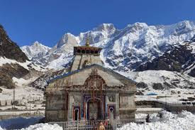

KEDARNATH TEMPLE
|  |
 |
|
 |
Kedarnath temple is one of the sacred pilgrimage centre in Northern India, located on the bank of Mandakini river at an altitude of 3584 meters above sea level. The historical name of this region is "Kedar Khand".
Kedarnath Temple is a Hindu temple, one of the twelve jyotirlinga of Shiva. The temple is located on the Garhwal Himalayan range near the Mandakini river, in the state of Uttarakhand, India
Religion
- Affiliation: Hinduism
- District: Rudraprayag
- Deity: Shiva
- Festivals: Maha Shivaratri
|
Location
- Location: Kedarnath
- State: Uttarakhand
- Country: India
|